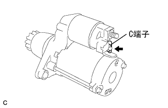
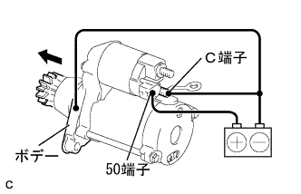
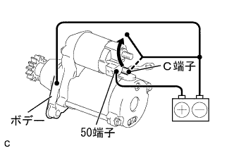
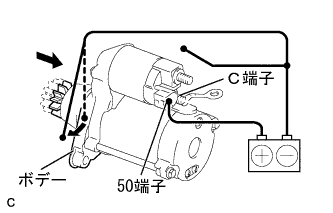
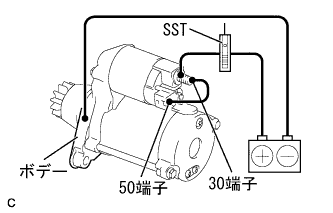

Starter Assembly (2GR-FE) Inspection |
| 1. Starter Assembly Inspection |
Operation Check
 |
Remove the nut and disconnect terminal C.
 |
Check that the pinion gear moves outward when connected as shown in the illustration.
 |
With the pinion gear moved outward, disconnect the cable from terminal C and check that the pinion gear remains out.
 |
With the pinion gear remaining out, disconnect the cable from the starter body and check that the pinion gear returns inward.
Connect the harness to terminal C and tighten it with the nut.
Secure the starter in a vise between aluminum plates.
 |
Connect the cables as shown in the illustration, and connect SST (AC/DC probe 400A) to the positive cable.
Connect terminal 50 and measure the current when the reading of SST (Toyota electrical tester) is stable.